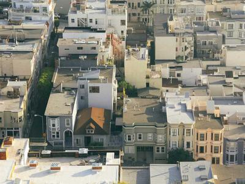

Shalom, keluarga besar Jemaat GKJTU Kinasih.
Tuhan terus bekerja di tengah-tengah kita, dan melalui warta jemaat minggu ini, kita diingatkan untuk tetap terlibat dalam pelayanan dan persekutuan.

Menu Layanan Gereja
Pilih halaman yang ingin Anda buka dengan menekan salah satu kartu di bawah ini